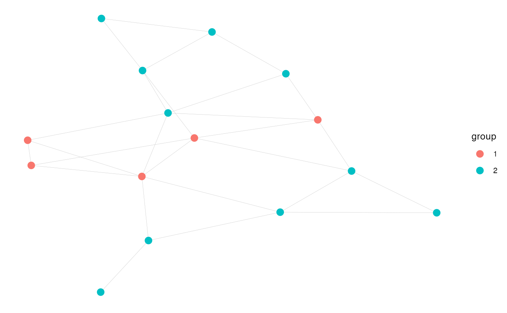
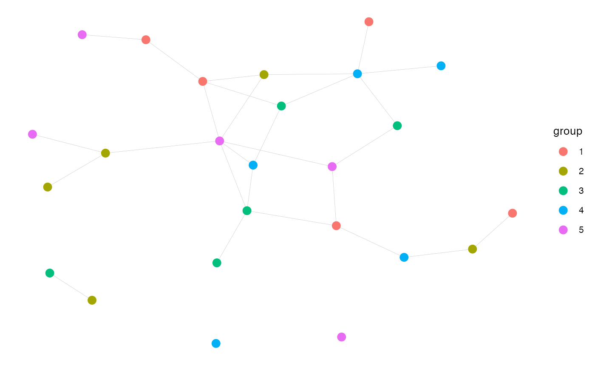

Create an undirected asymmetric homophily network.
make_homophily_network.RdCreates a network with an arbitrary number of groups of arbitrary size with arbitrary homophily levels. Homophily can take values from -1 (totally anti-homophilous) to +1 (totally homophilous), and 0 indicates equal probability of connecting within group as between groups. The algorithm builds the network by first assigning all within-group edges.
Arguments
- group_sizes
The population (size) of each group
- mean_degree
Desired mean degree
- homophily
Singleton or vector; if vector must be length of group_sizes
- group_names
Optional parameter to specify group names
- add_to_complete
Boolean to specify whether to complete the network if there's only one group left needing out-edges
Examples
# Two groups size 5 and 10.
hnet_2grp <- make_homophily_network(c(5, 10), mean_degree = 3, homophily = 0.5)
plot_homophilynet(hnet_2grp)

# Five groups all size 5 with out-group preference (neg. homophily).
hnet_5grp <- make_homophily_network(rep(5, 5), mean_degree = 2, homophily = -0.5)
plot_homophilynet(hnet_5grp)
